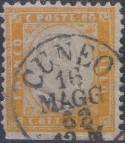
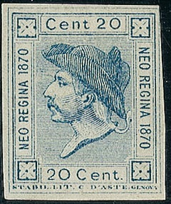

Return To Catalogue - Italy overview - Sardinia - Neapolitan Provinces
Note: on my website many of the
pictures can not be seen! They are of course present in the
catalogue;
contact me if you want to purchase the catalogue.
10 c brown 20 c blue 40 c red 80 c yellow
The perforation of these stamps is 11 1/2 x 12. They were printed in sheets containing 50 stamps.
Value of the stamps |
|||
vc = very common c = common * = not so common ** = uncommon |
*** = very uncommon R = rare RR = very rare RRR = extremely rare |
||
| Value | Unused | Used | Remarks |
| 10 c | RRR | R | Issued 24 February 1862 |
| 20 c | * | *** | Issued 1 March 1862 |
| 40 c | R | R | Issued 10 April 1862 |
| 80 c | * | RR | Issued 3 October 1862 |
Imperforate
15 Centesimi blue
This stamp was printed in sheets of 50.
Value of the stamps |
|||
vc = very common c = common * = not so common ** = uncommon |
*** = very uncommon R = rare RR = very rare RRR = extremely rare |
||
| Value | Unused | Used | Remarks |
| 15 c | *** | *** | Issued 1 January 1863 Inverted center: RR |

Stamps in a similar design for Neapolitan
Provinces
The 5 c green was never issued perforated (only imperforated for Sardinia), but reprint-forgeries made by the forger David Cohn exists of this stamp with perforation:


Reprints made by David Cohn
For more information on these 'reprints' see under Sardinia.


Forgeries of the 40 and 80 c values, the '40' and '80' are done
very badly. Similar imperforate forgeries exist for Sardinia. The first one has the forged
"TODI 10 APR. 62 UMBRIA" cancel, possibly by the stamp
forger Oneglia.

Another forged "TODI 10 APR. 62 UMBRIA" cancel, here on
a genuine Sardinia stamp with forged perforation and forged
cancel?

Forgery with inverted head and the "FOLIGNO 20 DIC 68"
cancel which can be found in the Fournier Album
Fournier album of the Papal States, with the forged "FOLIGNO
20 DIC 68" cancel.



Most likely a forged "CUNEO 16 MAGG 61 12 M" cancel,
according to http://www.ilpostalista.it/falsi/domande_199.htm the
town of Cuneo didn't use month indication with 4 letters, but
with 3 letters only.


Forged cancel "ORBETELLO 2 GEN 63". This cancel also
appears on a forged postage due stamp. It might have been made by
Oneglia.

In the book 'Philatelic Forgers, their Lives and Work' from V.E.
Tyler, a page from the 'Philatelisten Zeitung 18, 100 (1905)' is
reproduced with cancels from Oneglia. Among them is the cancel
"TORINO 19 MAGG 61 12 M" (thus with "61"
instead of "63", nevertheless I think this might be an
Oneglia product).

A piece of a letter with a 5 c Sardinia stamp and a 10 c Italy
stamp with a highly suspicious "BOLOGNA 23 62 11 S"
cancel.

15 c blue
Specialists distinguish two types of these stamps. In type I, the line below the word 'QUINDICI' is close at the 'Q'. In type II, there is a break just below the 'Q'. Type I was issued on 10 February 1863. Type II was issued in April 1863. Both types were printed in sheets of 50.
Value of the stamps |
|||
vc = very common c = common * = not so common ** = uncommon |
*** = very uncommon R = rare RR = very rare RRR = extremely rare |
||
| Value | Unused | Used | Remarks |
| 15 c | c | * | Issued 10 February 1863 Type I: R |
I've seen printer's waste with the impression on both the front and backside.
Printer's waste with double impression
Forgeries exist of the rare type I, examples:
I've been told that the above stamp is a forgery. It might be one of the modern forgeries of Italy that are often offered together with forgeries of the Italian States. According to http://www.italianstamps.co.uk/kingdom/matraire/index.html, this forgery is quite common but has the lettering too neat.

This forgery was even pasted on a letter on an old letter.

Genuine stamp on the left, forgery on the right. Note the missing
dots behind "C".
According to the book: 'Postal Forgeries of the World' by H.G.L. Fletcher, a postal forgery exists. This postal forgery has a very long upper parts of the 'T' and especially the 'E' of 'POSTALE'.


Probably modern fakes with fancy "RIMINI" and
"S.MARINO" cancels.


5 c green 10 c brown 10 c blue (1877) 15 c blue 20 c blue (1876) 20 c orange (1877) 30 c brown 40 c red 60 c violet 2 L red Surcharged (1865)
20 c and bar on 15 c blue
For the specialist, these stamps have perforation 14 and watermark 'crown':
(Watermark crown)
Value of the stamps |
|||
vc = very common c = common * = not so common ** = uncommon |
*** = very uncommon R = rare RR = very rare RRR = extremely rare |
||
| Value | Unused | Used | Remarks |
| 5 c | *** | c | |
| 10 c brown | R | c | |
| 10 c blue | RR | c | |
| 15 c | RR | c | |
| 20 c blue | *** | c | |
| 20 c orange | RR | c | |
| 30 c | ** | c | |
| 40 c | RR | c | |
| 60 c | *** | * | |
| 2 L | *** | *** | |
| 20 c on 15 c | ** | c | Three types exist of this overprint |
Overprinted 'ESTERO' for use in the Italian post offices in the Levant, click here, (slightly different design).
Fournier forged overprints, image taken from a 'Fournier Album of
Philatelic Forgeries' (reduced size)

I have seen some of these stamps (15 c, 30 c, 40 c, 50 c and 2 L) with the cancel removed in order to make them appear 'uncancelled'.
Numeral cancels exists in two types: 1) dots type; used from 1866 to 1877. 2) line type; used up to 1889. The numbers 3101 onwards only exist as the line type cancel. See also http://www.alneum-resources.com/resources/numitaly.html.
Numeral dot cancel (left) and numeral line cancel (right); both
reduced sizes
Some numeral cancels and their corresponding town
are:
1) Allesandria
2) Ancona
3) Bari
4) Bergamo
5) Bologna
6) Brescia
7) Calgliari
8) Catania
9) Como
10) Cremona
11) Ferrara
12) Firenze
13) Genova
14) Livorno
15) Lucca
16) Messina
17) Milano
18) Modena
19) Napoli
20) Novara
21) Palermo
22) Parma
23) Pavia
24) Perugia
25) Piacenza
26) Pisa
27) Siena
28) Torino
189) Torino (railway)
206) Roma
207) Roma (railway)
4473) Tarsogno
(Stamp of Italy used in Marseilles, France with French numeral
cancel)
Essays of this issue:

So-called 'Essay Bigola', 15 c red, I've seen this same essay in
grey and blue (both 15 c)

Essay Grazioli of the 1863 issue; I've also seen the values 10 c
red, 10 c brown and 10 c black on green.


More essays of the 1863 issue, I've seen the 40 c in the colour
green and the 60 c in the colour black on yellow.
A 'Wentch-Essay' of the 1863 issue


A bogus issue? inscription "NEO REGINA 1870 CINQUANTA
CENTESIMI", resembling the above issue. If my information is
correct, this stamp was issued as a carnival joke in Genoa. They
were described in The Stamp Collectors Magazine of 1871 and
called 'Carnival Stamps' there.

{kind=link}
{kind=link}